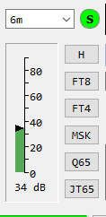

<!-- MHonArc v2.6.19+ -->
<!--X-Subject: Re: [NCDXC Chat] 6M FT8 decoding issue -->
<!--X-From-R13: &#60;rntyrlrzqNpbzpnfg.arg> -->
<!--X-Date: Mon, 27 Feb 2023 16:27:01 &#45;0600 -->
<!--X-Message-Id: 003901d94afa$8e6121b0$ab236510$@comcast.net -->
<!--X-Content-Type: multipart/related -->
<!--X-Reference: 46419500.3273647.1677533853422@connect.xfinity.com -->
<!--X-Reference: CAO8dLBhUKNJPDKdPVeche30_b+8HkdWiZKQ490t_a&#45;TwO7oOzA@mail.gmail.com -->
<!--X-Derived: pngephNcTEled.png -->
<!--X-Head-End-->
<!DOCTYPE HTML PUBLIC "-//W3C//DTD HTML 4.01 Transitional//EN"
        "http://www.w3.org/TR/html4/loose.dtd">
<html>
<head>

    <meta name="robots" content="noindex, nofollow">
<title>Re: [NCDXC Chat] 6M FT8 decoding issue</title>
<link rev="made" href="mailto:eagleyemd@comcast.net">
</head>
<body>
<!--X-Body-Begin-->
<!--X-User-Header-->
<!--X-User-Header-End-->
<!--X-TopPNI-->
<hr>
[<a href="msg28628.html">Date Prev</a>][<a href="msg28630.html">Date Next</a>][<a href="msg28628.html">Thread Prev</a>][<a href="msg28632.html">Thread Next</a>][<a href="maillist.html#28629">Date Index</a>][<a href="threads.html#28629">Thread Index</a>]
<!--X-TopPNI-End-->
<!--X-MsgBody-->
<!--X-Subject-Header-Begin-->
<h1>Re: [NCDXC Chat] 6M FT8 decoding issue</h1>
<hr>
<!--X-Subject-Header-End-->
<!--X-Head-of-Message-->
<ul>
<li><em>To</em>: &quot;'Frank'&quot; &lt;<a href="mailto:kibbish%40gmail.com">kibbish@gmail.com</a>&gt;,	&quot;'Bill Richter'&quot; &lt;<a href="mailto:brichter%40comcast.net">brichter@comcast.net</a>&gt;</li>
<li><em>Subject</em>: Re: [NCDXC Chat] 6M FT8 decoding issue</li>
<li><em>From</em>: &lt;<a href="mailto:eagleyemd%40comcast.net">eagleyemd@comcast.net</a>&gt;</li>
<li><em>Date</em>: Mon, 27 Feb 2023 14:26:35 -0800</li>
<li><em>Cc</em>: &quot;'Chat'&quot; &lt;<a href="mailto:chat%40ncdxc.org">chat@ncdxc.org</a>&gt;</li>
<li><em>Dkim-signature</em>: v=1; a=rsa-sha256; c=relaxed/relaxed; d=comcast.net; s=20190202a; t=1677536819; bh=03LS+C1qDjYgzaMpAjYoyq68bFfFv2Nllv5AkmJvz3k=; h=Received:Received:From:To:Subject:Date:Message-ID:MIME-Version: Content-Type:Xfinity-Spam-Result; b=jfyIPIaQvKfEHYAu2zntHrvAWuPzuO6kvMSJOpM4wHlOtSSl7AWXgGrNlk9WV3J4v S8nKAZwRGONSE21X3o+PbN174We7aRcJ/Y9TofBAyVNEvEQO5RJSXL58atGUsh+9P4 YBI3K3qVZfIGl3msb8KnnQEDKd5jU7nHShZl7oWLVDGC9+Gz/z7Qr3rU8JR4yufdqj RND21djjiQ0rwTdgt/00F8uwKnAingMp06VtfyhlVDnPkeEtsSSuFieNwsJZksUF3b ewza0XlCJwlcMFJdtZtIJd/54cumZkN5yaAMiJw050Sp4Eb/Xo2iaI85UjewWVos/q d4vvKzc7Xl67A==</li>
<li><em>In-reply-to</em>: &lt;<a href="msg28623.html">CAO8dLBhUKNJPDKdPVeche30_b+8HkdWiZKQ490t_a-TwO7oOzA@mail.gmail.com</a>&gt;</li>
<li><em>List-archive</em>: &lt;<a href="http://mail.ncdxc.org/mailman/private/chat_ncdxc.org/">http://mail.ncdxc.org/mailman/private/chat_ncdxc.org/</a>&gt;</li>
<li><em>List-help</em>: &lt;<a href="mailto:chat-request@ncdxc.org?subject=help">mailto:chat-request@ncdxc.org?subject=help</a>&gt;</li>
<li><em>List-id</em>: NCDXC Discussion List &lt;chat.ncdxc.org&gt;</li>
<li><em>List-post</em>: &lt;<a href="mailto:chat@ncdxc.org">mailto:chat@ncdxc.org</a>&gt;</li>
<li><em>List-subscribe</em>: &lt;<a href="http://mail.ncdxc.org/mailman/listinfo/chat_ncdxc.org">http://mail.ncdxc.org/mailman/listinfo/chat_ncdxc.org</a>&gt;, &lt;<a href="mailto:chat-request@ncdxc.org?subject=subscribe">mailto:chat-request@ncdxc.org?subject=subscribe</a>&gt;</li>
<li><em>List-unsubscribe</em>: &lt;<a href="http://mail.ncdxc.org/mailman/options/chat_ncdxc.org">http://mail.ncdxc.org/mailman/options/chat_ncdxc.org</a>&gt;, &lt;<a href="mailto:chat-request@ncdxc.org?subject=unsubscribe">mailto:chat-request@ncdxc.org?subject=unsubscribe</a>&gt;</li>
<li><em>References</em>: &lt;<a href="msg28621.html">46419500.3273647.1677533853422@connect.xfinity.com</a>&gt; &lt;<a href="msg28623.html">CAO8dLBhUKNJPDKdPVeche30_b+8HkdWiZKQ490t_a-TwO7oOzA@mail.gmail.com</a>&gt;</li>
<li><em>Thread-index</em>: AQKne3olGl9DHT025kwezwnltCrGwQHXH4qdrThDiRA=</li>
</ul>
<!--X-Head-of-Message-End-->
<!--X-Head-Body-Sep-Begin-->
<hr>
<!--X-Head-Body-Sep-End-->
<!--X-Body-of-Message-->
<table width="100%"><tr><td style="a:link { color: blue } a:visited { color: purple } "><div class=WordSection1><p class=MsoNormal>I&#x2019;ve encountered about every error there is&#x2026; from painful experience, I&#x2019;d check your level first (should be 40 dB with just noise) as noted below by Frank, then be sure you&#x2019;ve checked off deep and enable AP under &#x201C;decode&#x201D;, and lastly be sure your sound settings are in in &#x201C;codec&#x201D; for speaker and mic when WSJT is running. Be sure that NO &#x201C;sound enhancements&#x201D; are enabled in Windows, that your Rx equalizer is flat, and you aren&#x2019;t using any signal processing, sound as a noise blanker. If you haven&#x2019;t upgraded, the latest version of WSJT is a major improvement in both convenience and decoding sensitivity. As Andy K6ZP says, it&#x2019;s usually a Windows problem, not a WSJT problem.<o:p></o:p></p><p class=MsoNormal>It&#x2019;s a journey!<o:p></o:p></p><p class=MsoNormal>73 de Bruce, K3NQ<o:p></o:p></p><p class=MsoNormal><o:p>&nbsp;</o:p></p><div style='border:none;border-top:solid #E1E1E1 1.0pt;padding:3.0pt 0in 0in 0in'><p class=MsoNormal><b>From:</b> Chat &lt;chat-bounces@ncdxc.org&gt; <b>On Behalf Of </b>Frank via Chat<br><b>Sent:</b> Monday, February 27, 2023 2:06 PM<br><b>To:</b> Bill Richter &lt;brichter@comcast.net&gt;<br><b>Cc:</b> Chat &lt;chat@ncdxc.org&gt;<br><b>Subject:</b> Re: [NCDXC Chat] 6M FT8 decoding issue<o:p></o:p></p></div><p class=MsoNormal><o:p>&nbsp;</o:p></p><div><div><p class=MsoNormal>Is your receive audio level high enough to decode signals?&nbsp; Without being able to see it, that would be my first thought.&nbsp; In my experience, you want to have it set to at least 30, and probably no more than about 60.&nbsp; Here's a shot of mine:<o:p></o:p></p></div><div><p class=MsoNormal><o:p></o:p></p></div><div><p class=MsoNormal><o:p>&nbsp;</o:p></p></div><div><p class=MsoNormal>Also, you're on a pretty old version of WSJT-X.&nbsp; I'd suggest upgrading.<o:p></o:p></p></div><div><p class=MsoNormal><o:p>&nbsp;</o:p></p></div><div><p class=MsoNormal>73,<o:p></o:p></p></div><div><p class=MsoNormal>&nbsp;Frank N6OI<o:p></o:p></p></div><div><p class=MsoNormal><o:p>&nbsp;</o:p></p></div><div><p class=MsoNormal><o:p>&nbsp;</o:p></p></div></div><p class=MsoNormal><o:p>&nbsp;</o:p></p><div><div><p class=MsoNormal>On Mon, Feb 27, 2023 at 1:38&#x202F;PM Bill Richter via Chat &lt;<a rel="nofollow" href="mailto:chat@ncdxc.org">chat@ncdxc.org</a>&gt; wrote:<o:p></o:p></p></div><blockquote style='border:none;border-left:solid #CCCCCC 1.0pt;padding:0in 0in 0in 6.0pt;margin-left:4.8pt;margin-right:0in'><div><div><p class=MsoNormal><span style='font-size:12.0pt;font-family:"Helvetica",sans-serif;color:#333333'>Hi, folks, need some assistance here. <o:p></o:p></span></p></div><div><p class=MsoNormal><span style='font-size:12.0pt;font-family:"Helvetica",sans-serif;color:#333333'><o:p>&nbsp;</o:p></span></p></div><div><p class=MsoNormal><span style='font-size:12.0pt;font-family:"Helvetica",sans-serif;color:#333333'>On 6M FT8, I see a lot of signals, but not many decodes. I've checked clock (dead on according to <a rel="nofollow" href="http://time.is" target="_blank">time.is</a>), mode (USB-D1, which my IC-7600 likes for the rest of HF), filters (wide open) and attenuation (off), still no luck decoding. See attached screenshot for issue. <o:p></o:p></span></p></div><div><p class=MsoNormal><span style='font-size:12.0pt;font-family:"Helvetica",sans-serif;color:#333333'><o:p>&nbsp;</o:p></span></p></div><div><p class=MsoNormal><span style='font-size:12.0pt;font-family:"Helvetica",sans-serif;color:#333333'>Thanks in advance! <o:p></o:p></span></p></div><div><p class=MsoNormal><span style='font-size:12.0pt;font-family:"Helvetica",sans-serif;color:#333333'><o:p>&nbsp;</o:p></span></p></div><div><p class=MsoNormal><span style='font-size:12.0pt;font-family:"Helvetica",sans-serif;color:#333333'><o:p>&nbsp;</o:p></span></p></div><div><p class=MsoNormal>-- <br>Thanks, <br>Bill Richter <br>KM6MHZ <o:p></o:p></p></div></div><p class=MsoNormal>_______________________________________________<br>Chat mailing list<br><a rel="nofollow" href="mailto:Chat@ncdxc.org" target="_blank">Chat@ncdxc.org</a><br><a rel="nofollow" href="http://mail.ncdxc.org/mailman/listinfo/chat_ncdxc.org" target="_blank">http://mail.ncdxc.org/mailman/listinfo/chat_ncdxc.org</a><o:p></o:p></p></blockquote></div></div></td></tr></table>
<!--X-Body-of-Message-End-->
<!--X-MsgBody-End-->
<!--X-Follow-Ups-->
<hr>
<!--X-Follow-Ups-End-->
<!--X-References-->
<ul><li><strong>References</strong>:
<ul>
<li><strong><a name="28621" href="msg28621.html">[NCDXC Chat] 6M FT8 decoding issue</a></strong>
<ul><li><em>From:</em> Bill Richter &lt;brichter@comcast.net&gt;</li></ul></li>
<li><strong><a name="28623" href="msg28623.html">Re: [NCDXC Chat] 6M FT8 decoding issue</a></strong>
<ul><li><em>From:</em> Frank &lt;kibbish@gmail.com&gt;</li></ul></li>
</ul></li></ul>
<!--X-References-End-->
<!--X-BotPNI-->
<ul>
<li>Prev by Date:
<strong><a href="msg28628.html">Re: [NCDXC Chat] 6M FT8 decoding issue</a></strong>
</li>
<li>Next by Date:
<strong><a href="msg28630.html">Re: [NCDXC Chat] Look at 6M</a></strong>
</li>
<li>Previous by thread:
<strong><a href="msg28628.html">Re: [NCDXC Chat] 6M FT8 decoding issue</a></strong>
</li>
<li>Next by thread:
<strong><a href="msg28632.html">[NCDXC Chat] ZL3CW is seeking a shared room at Visalia for IDXC 2023</a></strong>
</li>
<li>Index(es):
<ul>
<li><a href="maillist.html#28629"><strong>Date</strong></a></li>
<li><a href="threads.html#28629"><strong>Thread</strong></a></li>
</ul>
</li>
</ul>

<!--X-BotPNI-End-->
<!--X-User-Footer-->
<!--X-User-Footer-End-->
</body>
</html>
